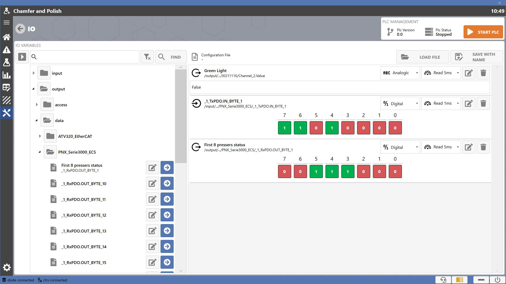
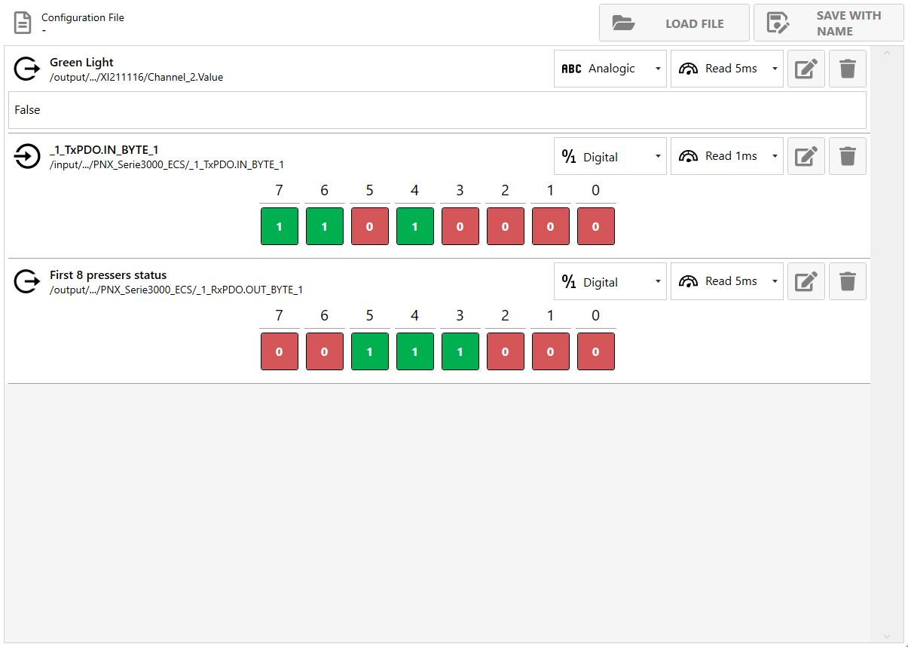
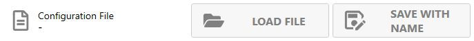
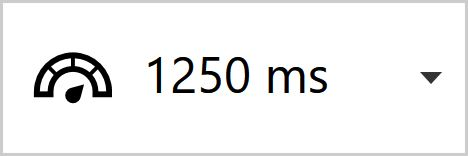

This page allows the technician to test the machine's electrical scheme by sending inputs and reading outputs directly from its electronic boards, bypassing the PLC’s control.

PLC management
The user can see the PLC status from the top right part of the window.
PLC version Version of the software running on the PLC.
PLC status Shows if the PLC is running or in setup mode.
Start/Stop PLC Allows to start or stop the PLC of the machine, in order to safaely change the variables value.
NOTE
In order to effectively test the I/O, the PLC needs to be in setup mode.
Browse data layer
On the left side of the screen there is a tree that shows the input/output directories of the machine.
In order to find a variable, the user can follow the correct path or search it through the filter above.
Find The user can search for a variable or a folder by using a filter. The filter works both for the name of the variable and also for its note.
Remove filter Removes the filter from the search bar.
The user can browse the data layer tree elements:
Folder It is possible to expand to see its elements.
Variable Identify a variable node.
For each variable, the user can perform two actions:
Note Add a note that can help to identify the variable.
Monitor variable Add the variable to the list of monitored variables.
Using the button located on the top-left side, the user can hide the browsing panel and leave more space for the observed-variable list.
Show/Hide data-layer tree Hide the browsing panel or display it again.
Monitored Variables
On the right side of the window there is a list that shows the list of monitored variables, where the user can read and/or modify for the real time value of each variable.

Configuration file
It is possible to load or save presets of monitored variables using the section above the list.

Monitoring configuration file Show the name of the loaded monitoring configuration. An asterisk (*) beside the name indicates changes.
Load monitoring configuration Open a savedmonitoring configuration and replace the current observed-variable list with the variables in that file.
Save monitoring configuration as Save the observed-variable list, display choices and read intervals.
Variable
Every row of the list represents a variable, that is monitored in real time.
The variables are divided in two categories:
Input variable Identify a variable from the input data-layer path. It is only possible to read the value of these variables.
Output variable The user can both read and/or change the value of it.
ATTENTION!
In order to change the value of a variable the PLC of the machine must be stopped.
It is possible to change the reading speed and the view of each variable:
View type The user can decide to see the variable as an analogic value or else as a digital value.
NOTE
If the view of the variable is set to digital, its value is changed every time the user presses a bit.
Else, in the analogic scenario, the user must write correctly the new value inside the field.

Read speed It is is possible to change the speed at which the variable is read.
Moreover, the user can perform the following actions:
Note Add a note that can help to identify the variable. The note is changed also in the tree.
Move variable down Move the observed variable one position down in the list.
Move variable up Move the observed variable one position up in the list.